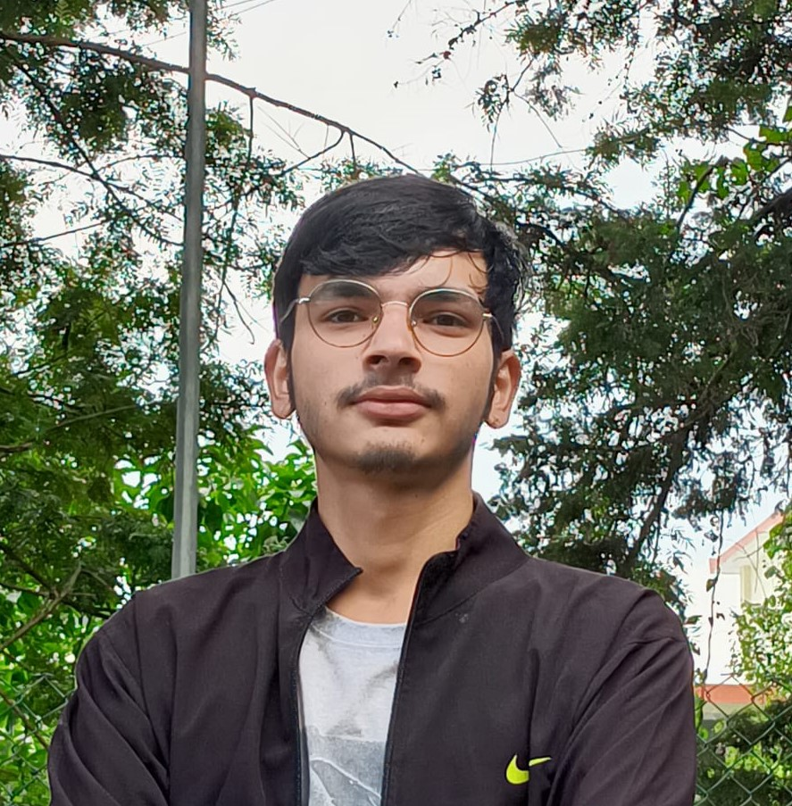

Nitin Joshi

Summary:
Passionate B.Tech student pursuing a degree in Computer Science at Graphic Era Hill University. Dedicated learner with a strong foundation in academic studies, as evidenced by outstanding performance in 10th and 12th grades. Actively expanding knowledge in web development and Java programming, alongside a talent for portrait sketching and esports. Seeking opportunities to leverage skills and knowledge to make a positive impact.
Education:
Bachelor of Technology (B.Tech) in Computer Science
Graphic Era Hill University
(2022 - 2026)
Higher Secondary (12th Grade)
Vivekanand Almora(2022)
Secondary School (10th Grade)
Vivekanand Almora(2020)
Skills:
- Web Development: Currently learning and building web projects using HTML, CSS, and JavaScript.
- Java Programming: Actively improving programming skills in Java through self-study and online courses.
- Portrait Sketching: A skilled artist with a passion for creating detailed portrait sketches.
- Esports: Experienced esports player, proficient in various games.
- Problem Solving: Strong analytical and problem-solving abilities.
- Communication: Effective communication and teamwork skills.
Contact
Hobbies